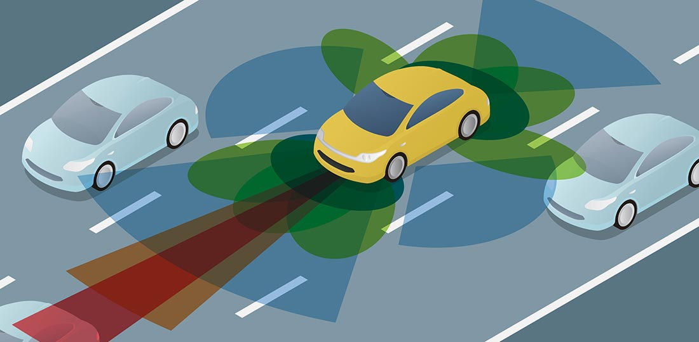
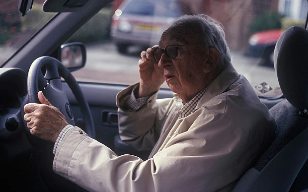

Autonomous vehicles are cars or trucks where human drivers are not needed to safely operate the vehicle. They are also known as driverless cars and are controlled by the use of software and sensors which are capable of sensing their environment and moving safely with little or no human drivers.
Autonomous technology isn’t an all or nothing type of technology. There is a whole spectrum from driver-enabled to fully-driverless vehicles. We still have some time to go to get to level 5 autonomous vehicles. There are 6 levels of autonomy as follows :
Level 0 - No Automation
This describes your everyday car with no automation.
Level 1 - Driver Assistance
On this level we find the introduction of Advanced Driver Assistance Systems (ADAS) that either control steering or speed to support the driver. An example of this is adaptive cruise control that automatically accelerates and decelerates based on other vehicles on the road.
Level 2 - Partial Automation
This is where it gets a bit more interesting. Although the driver must have hands on the wheel and be ready to take control at any given moment, at this level, both steering and acceleration are simultaneously handled by the autonomous system. The human driver still monitors the environment and supervises the support functions.
Level 3 - Conditional Automation
Level 3 autonomous vehicles are capable of driving themselves, but only under ideal conditions and with limitations, such as limited-access divided highways at a certain speed. However, the system might require the intervention of a human, so the driver must be able to take control at all times.
Level 4 - High Automation
At level 4 autonomous vehicles have high automation and can fully drive themselves but only under certain conditions, for example terrain, weather and light conditions. The vehicle won’t drive if not all conditions are met.
Level 5 - Full Automation
Once we reach level 5 autonomy we have full automation and the vehicle can fully drive by itself. The vehicles on this level should be able to monitor and manoeuvre through all road conditions and require no human interventions whatsoever, which eliminates the need for a steering wheel and pedals.
The environment and circumstances needed for an autonomous vehicle to operate will greatly influence the level of autonomy that can be achieved, for instance the terrain, traffic or the weather. An autonomous vehicle may operate perfectly fine on a highway at level 4 but in a busy city centre may need to revert to level 3.
Level 5 autonomous vehicles have the same mobility as a human driver. Humans are able to perceive and sense a large amount of information, make a decision and act on it in a very quick time. A fully autonomous system should be able to, at the very least, match or even outperform this ability.

The main technology required for autonomous vehicles is interaction between predictive artificial intelligence and imaging technology. The sensors in and around the vehicle create 3D pictures around the vehicle and the artificial intelligence then interprets how the vehicle should respond. Although there has been significant progress in this area, the aim to bring the vehicles to be fully autonomous is to reduce the amount of time between image and response to near-zero.
Designing the autonomous vehicle to be able to adjust to all driving scenarios, in all road, weather and traffic conditions is the biggest technical challenge that needs to be achieved.
In the latest research and progress done with autonomous vehicles, the leading sensor technology approach is thermal imaging. A thermal imaging sensor can detect longer wavelengths than those in the visual spectrum, they can sense images below the visual spectrum, making it more able to detect humans, animals, and objects in different weather conditions, regardless of the time of day.
Due to the fact that the vibrations of the vehicle can make the LIDAR (Light Detection and Ranging) data unstable, thus making the reliability of the technology limited, this is a drawback of using it as a sensor for autonomous vehicles. LIDAR is a method used for measuring distances by illuminating the target with laser and measuring the reflection with a sensor. In response to this, MIT has designed a localising ground penetrating radar to solve the problem of sensing complex surfaces. This technology sends radio waves into the ground and creates a stable digital map of the area which is not affected by weather or light conditions. This, together with the sensors is the most accurate technology to date and Geophysical Survey Systems Inc. (GSSI) is continuing the development of this technology.
With all the advancement in autonomous technology, getting it to a point where it is fully autonomous can only go as fast as sensor technology will allow. All of the sensor technology has limitations which restricts it in being able to take into account the unpredictable weather and human behaviour patterns which the vehicle may encounter. The best options thus far are thermal imaging and localised ground penetrating radar in as far as sensor types are concerned.
Autonomous vehicles are designed with the intention to simplify our lives and will come with their own set of advantages but, there will also be some disadvantages that come along with this technology.
Autonomous vehicles will prevent human error in a lot of situations as the system controls the vehicle. Thus there will be no opportunity for interruptions and distractions where human drivers are more susceptible to it.
Due to the technologies used in the vehicles it will create algorithms that will determine the correct distance between vehicles, thus there is less likelihood of an accident occurring. Traffic jams will also become less prevalent when more driverless cars are on the road as they are able to communicate with each other, which will reduce congestion and improve traffic with increased lane capacity.

Autonomous cars will also have the ability to drop you off at your destination and then proceed to find a vacant parking spot, saving you time and money looking for parking. You will also be able to save more time with an autonomous car as it takes control of the driving, leaving the driver with spare time to continue work or make calls without having to worry about road safety.
For people with disabilities or elderly people who have difficulty driving, autonomous vehicles can help them to have access to safe transportation. This also leads the way to driverless taxi services for all.
Some of the disadvantages of autonomous vehicles could include things such as safety concerns. Although a vehicle may be successfully programmed, an unexpected glitch can occur, which could cause the malfunctioning of certain sensors or components.
Autonomous vehicles could also become a target for hackers, giving them the opportunity to collect personal data of the owner, thus further compromising there security.
The change to autonomous vehicles could also impact the employment rate as they take over the duties and responsibilities of humans such as taxi or truck drivers, who may lose their jobs as they are no longer needed.
At this stage the cost of a fully autonomous vehicle would be expensive, due to the cost of the technology needed, but this may change and over time with the development of the technology and the mass production of driverless cars, giving a more average earner the opportunity to own one.
However, if autonomous cars are introduced into daily life too quickly, people could easily be overwhelmed by the advanced technology and our daily lives could change in various ways.
The use of driverless cars could however simplify our lives in many ways; there is the prospect of fewer accidents which will result in avoiding injuries and saving lives, we could also save money because they are more efficient when driving and reduce traffic congestion. We can furthermore look forward to the total elimination in terms of traffic fines and also reduce the cost of insurance associated with owning a car. Because Driverless cars are low maintenance they would save both time and money in respect of repairs. So, as can be seen, driverless cars can be a win all around.
The more common driverless cars become, the more we will rely on them in our day to day lives. They could be used as taxis or share drive options, simplifying commuting to school, work or even social and sporting events more easily. The convenience and safety of the driverless cars will also save us time as we can spend our time commuting more effectively doing other stuff as opposed to having to spend time stuck in traffic and concentrating on driving.
Autonomous vehicle could also be helpful to me and those around me when it comes to businesses that do deliveries, as you could order things online and it could be delivered using an autonomous vehicle, getting a contactless delivery to your door.
So all around, once driverless cars become more common place, it would have a general positive effect on my life and that of those around me.
Team 18 - Creative Protocol© 2020